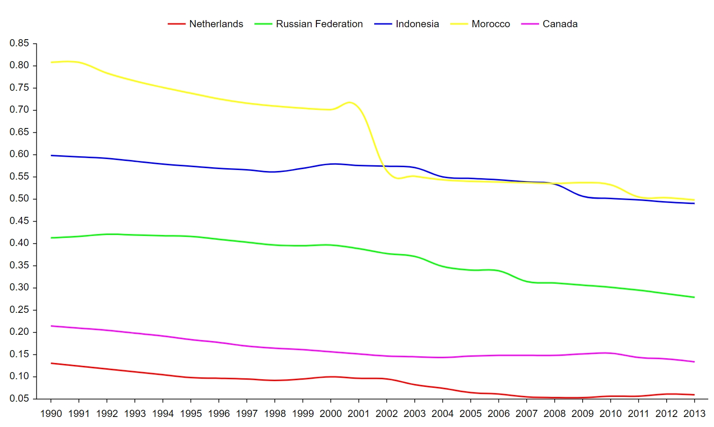
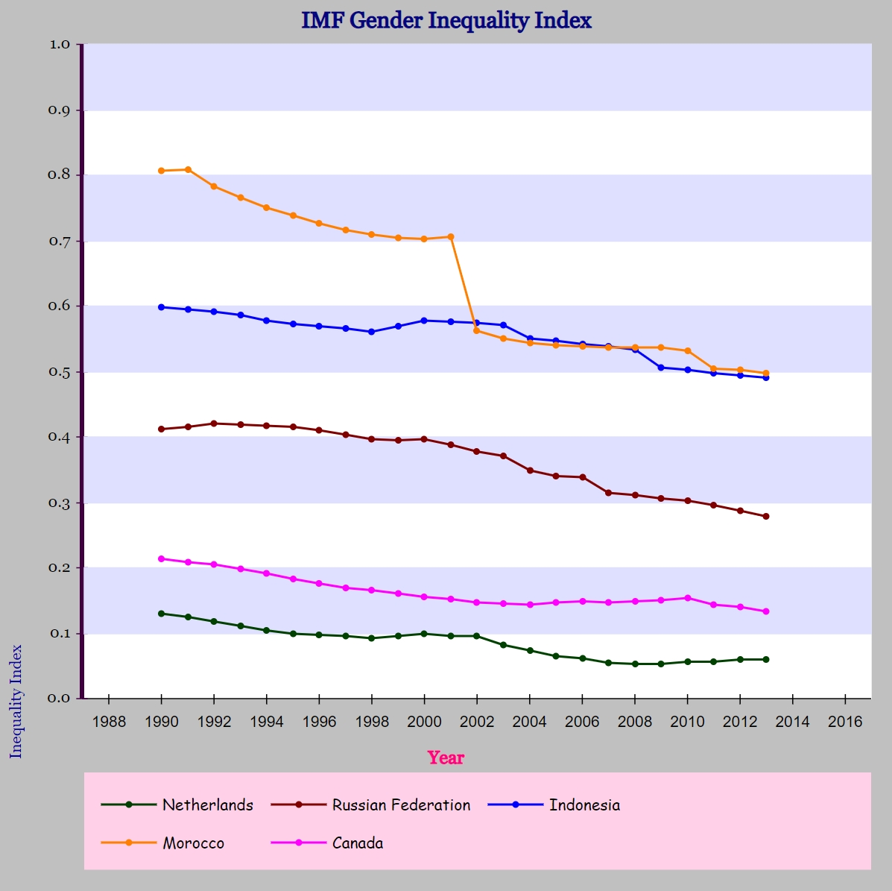

Design your own Multiseries Line graph online and use it on it on your website with a few lines of javascript. Using defaults the graph will already look nice:
Using the free online editor allows you to change over 75 settings:
The steps are simple:
Add the Lukisan library to your page:
<script src="lukisan.js"></script>
Without loading a settings file:
var chart = createMultiseriesLineChart(document.getElementById('chart_div'));
The graph will be displayed in the HTML element chart_div (make sure all html elements are loaded before calling this function). And chart is now a javascript object, which can be used the manipulate the graph further.
Or with loading a settings file called chart.json:
createMultiseriesLineChart(document.getElementById('chart_div'),
'chart.json',
function(chart_fromfile)
{
var chart = chart_fromfile;
chart.redraw();
});
The graph will be displayed in the HTML element chart_div (make sure all html elements are loaded before calling this function). And chart is now a javascript object, which can be used the manipulate the graph further. Please note this call is asynchronous: any immediate maniplulation should be done in the shown function before the call to the redraw method.
The data should be an array of arrays. The first array starts with the format of x values (in case of a DateTime axis, otherwise ignored), followed by the names of the series. The other arrays contain an x value followed by a y value for each serie. The examples above use these data:
var data = [["YYYY", "Netherlands", "Russian Federation", "Indonesia", "Morocco", "Canada"],
[1990, 0.129883497953415, 0.411991596221924, 0.597523748874664, 0.807207465171814, 0.213974073529243],
[1991, 0.124339945614338, 0.416123956441879, 0.594921469688416, 0.808139443397522, 0.2092055529356],
[1992, 0.117460161447525, 0.420459240674973, 0.592229187488556, 0.783722460269928, 0.205279126763344],
[1993, 0.1113266274333, 0.419260501861572, 0.585594475269318, 0.766427755355835, 0.19792215526104],
[1994, 0.104803301393986, 0.417912095785141, 0.578411996364594, 0.750807166099548, 0.191040769219399],
[1995, 0.0989039167761803, 0.415616899728775, 0.573438167572021, 0.738668859004974, 0.183683097362518],
[1996, 0.0969173833727837, 0.409726202487946, 0.56896698474884, 0.726104557514191, 0.176632702350616],
[1997, 0.0954262614250183, 0.403043359518051, 0.565119683742523, 0.71564906835556, 0.169583931565285],
[1998, 0.0922904312610626, 0.395828515291214, 0.561160445213318, 0.709718465805054, 0.1651870906353],
[1999, 0.0952492281794548, 0.394681751728058, 0.569291591644287, 0.704300761222839, 0.160937234759331],
[2000, 0.0995840802788734, 0.396078586578369, 0.578227162361145, 0.701909780502319, 0.156323701143265],
[2001, 0.0960415899753571, 0.388031631708145, 0.576224684715271, 0.70590728521347, 0.151528850197792],
[2002, 0.0956564173102379, 0.377016574144363, 0.574487030506134, 0.562243700027466, 0.146539777517319],
[2003, 0.0824367105960846, 0.370796352624893, 0.571134626865387, 0.550694346427917, 0.144707351922989],
[2004, 0.0739728733897209, 0.347948908805847, 0.549762070178986, 0.543370842933655, 0.143155604600906],
[2005, 0.0648174062371254, 0.340676426887512, 0.546305656433105, 0.540084183216095, 0.147019669413567],
[2006, 0.0613519810140133, 0.338683128356934, 0.542640268802643, 0.538191974163055, 0.148476660251617],
[2007, 0.0542488060891628, 0.314577132463455, 0.537635505199432, 0.536250114440918, 0.147649303078651],
[2008, 0.0531929843127728, 0.310950219631195, 0.53295236825943, 0.535906434059143, 0.148470118641853],
[2009, 0.0535213761031628, 0.305890619754791, 0.506109118461609, 0.536215126514435, 0.150826245546341],
[2010, 0.0562244318425655, 0.301766604185104, 0.501796066761017, 0.532181739807129, 0.153528973460197],
[2011, 0.0571327656507492, 0.295386672019959, 0.49801641702652, 0.503967225551605, 0.143746912479401],
[2012, 0.0606018863618374, 0.286915123462677, 0.493601351976395, 0.502639591693878, 0.140906438231468],
[2013, 0.0600090064108372, 0.279409915208817, 0.490205138921738, 0.498253434896469, 0.133069649338722]
];
The data is just another attribute of the chart. The following section explains how to manipulate the chart attributes.
The chart attributes can be manipulated directly:
chart.chart_width = 1000;
Please note that the graph will not be redrawn when the attributes are manipulated this way. Call chart.redraw() when ready:
chart.chart_width = 1000;
chart.redraw();
Attributes can also be manipulated using the method set_attribute(attribute_name, attribute_value):
chart.set_attribute('chart_width', 1000);
The graph will then be automatically redrawn.
These are the available attributes and their default values:
data: null
chart_x: 0
chart_y: 0
chart_width: 1000
chart_height: 600
chart_background_color: '#ffffff'
chart_right_inside_margin: 10
title_text: ''
title_position: 'middle' ('start', 'middle' or 'end')
title_top_margin: 3
title_horizontal_margin: 3
title_color: '#000000'
title_font_size: 20
title_font_family: 'Arial, Helvetica, sans-serif'
title_font_weight: 0 (0 = normal, 1 = bold)
axisl_title_text: ''
axisl_title_position: 'middle' ('start', 'middle' or 'end')
axisl_title_left_margin: 3
axisl_title_vertical_margin: 3
axisl_title_color: '#000000'
axisl_title_font_size: 14
axisl_title_font_weight: 0 (0 = normal, 1 = bold)
axisl_title_font_family: 'Arial, Helvetica, sans-serif'
axisb_title_text: ''
axisb_title_position: 'middle' ('start', 'middle' or 'end')
axisb_title_bottom_margin: 8
axisb_title_horizontal_margin: 3
axisb_title_color: '#000000'
axisb_title_font_size: 14
axisb_title_font_weight: 0 (0 = normal, 1 = bold)
axisb_title_font_family: 'Arial, Helvetica, sans-serif'
legend_position: 'top' ('top' or 'bottom')
legend_bg_color: '#ffffff'
legend_vertical_margin: 10
legend_left_margin: 'a' ('a'= automatic)
legend_align: 'center' ('left', 'center' or 'right')
legend_line_length: 25
legend_line_right_margin: 5
legend_vertical_inside_margin: 15
legend_horizontal_inside_margin: 15
legend_font: 'Arial, Helvetica, sans-serif'
legend_font_size: 14
legend_font_color: '#000000'
axisl_top_margin: 5
axisl_color: '#000000'
axisl_thickness: 1
axisl_minimum: 'a' ('a'= automatic)
axisl_maximum: 'a' ('a'= automatic)
axisl_ticks_interval: 'a' ('a'= automatic)
axisl_ticks_color: '#000000'
axisl_ticks_thickness: 1
axisl_ticks_length: 5
axisl_ticks_left_margin: 5
axisl_ticks_position: 'left' ('left', 'center' or 'right')
axisl_tick_labels_font: 'Arial, Helvetica, sans-serif'
axisl_tick_labels_font_size: 14
axisl_tick_labels_font_color: '#000000'
axisl_tick_labels_position: 'end' ('start', 'middle' or 'end')
axisl_tick_labels_left_margin: 15
axisb_color: '#000000'
axisb_data_type: 'number' ('number' or 'datetime')
axisb_thickness: 1
axisb_minimum: 'a' ('a'= automatic)
axisb_maximum: 'a' ('a'= automatic)
axisb_ticks_interval: 'a' ('a'= automatic)
axisb_ticks_units: 'y' ('y', 'M', 'w', 'd', 'h', 'm', 's' or 'ms'; for datetime axis only)
axisb_ticks_color: '#000000'
axisb_ticks_thickness: 1
axisb_ticks_length: 5
axisb_ticks_bottom_margin: 5
axisb_ticks_position: 'bottom' ('top', 'center' or 'bottom')
axisb_tick_labels_font: 'Arial, Helvetica, sans-serif'
axisb_tick_labels_font_size: 14
axisb_tick_labels_font_color: '#000000'
axisb_tick_labels_position: 'middle' ('start', 'middle' or 'end')
axisb_tick_labels_bottom_margin: 15
axisb_tick_labels_format: '' (same as moment.js, for datetime axis only)
axisb_tick_labels_locale: 'en' (same as moment.js, for datetime axis only)
series_colors: '#ff0000;#00ff00;#0000ff;#ffff00;#ff00ff;#00ffff;#808080;#ff8000;#008040;#b9b9ff;#804000;#ff80c0;#808000;#800080;#ff8080;#408080;#0000a0;#ffffbf;#400080;#0080ff'
series_line_thickness: 2
series_line_smoothing: 0.2 (0 = none)
series_point_size: 0
area_bg_color: '#ffffff'
support_line_thickness: 0 (0 = none)
support_line_thickness_units: 'pixels' ('pixels' or 'ticks')
support_line_color: '#000000'